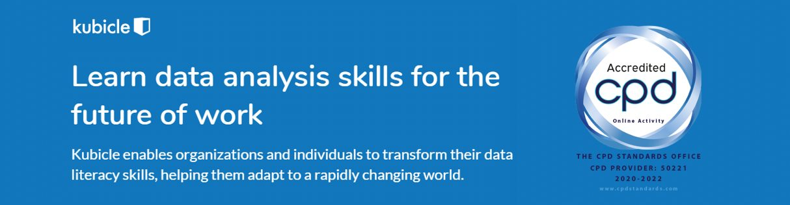

Becoming a ‘Data Citizen’
Kubicle is on a mission to make no-code online training in data analytics accessible to everyone, enabling people to thrive in the modern workplace.
Regardless of your professional domain, the understanding of data – as it pertains to business intelligence and critical business thinking – is becoming an increasingly important aspect of modern work. From corporate finance teams who are looking to become the next generation of Excel power users, to management consultants who are keen to learn about the most recent advancements in RPA (Robotic Process Automation) to better client engagements – the benefits of enhanced data literacy is only increasing over time.

Earn CPD Credits While you Train
As many professional enterprises use Kubicle for employee upskilling, we thought it only natural to partner with the CPD Standards Office to support Kubicle Learners with earning required CPD credits/units.
The CPD Standards accreditation operates internationally and meets the CPD requirements for all professional bodies, regulators and membership organisations across the globe. This means that a professional attending an accredited CPD training activity can receive a CPD Certificate, which can then be used towards their national CPD requirements.
Some professional bodies that accept CPD Standards Office certificates include:
- Association of Chartered Certified Accountants (ACCA)
- Chartered Institute of Management Accountants (CIMA)
- Association of Tax Technicians (ATT)
- Chartered Institute of Public Finance and Accountancy (CIPFA)
- Chartered Institute of Personnel and Development (CIPD)
- Chartered Management Institute (CMI)
- Institute of Direct and Digital Marketing (IDM)
- Institute of Directors (IoD)
- Chartered Institute of Marketing (CIM)
For a more complete list refer to the CPD Standards Office website.
How to Claim your Credits
Kubicle offers a highly customised training solution. Through our subject-level diagnostic testing we’re able to ensure all Learners begin their data literacy program from a capability level that’s specific to them. As such, our learning modules can take a couple of hours, to several hours to complete. Because of this level of personalisation, CPD credits can be earned on aggregate Kubicle learning time, subject to course completions, logged learning time and passed examinations.
By way of example: If a learner has just completed 2 hours (lesson time + exam time) of cumulative training on Kubicle’s Mergers and Acquisitions course in the Advanced Financial Modeling learning plan, a total of 2 CPD Hours will have been accumulated. For the majority of professional bodies, 1 CPD Hour is equivalent to 1 CPD credit/point/unit.
Please check with your professional body on how their CPD credits/hours/units are calculated.
To claim CPD credits, please contact Kubicle Support and they will complete an individual assessment to ascertain the total number of credits earned.